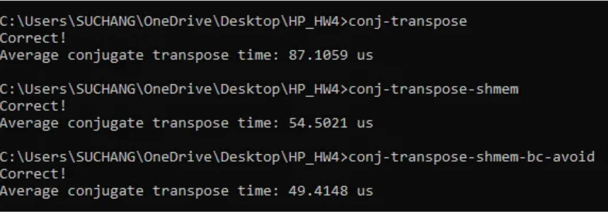

其他專案 · Selected Work · 2025
CUDA 矩陣共軛轉置
用 CUDA 實作 N×N 複數矩陣的共軛轉置（conjugate transpose）： 轉置座標，並把每個元素的虛部取負。從只用 global memory 的陽春版本開始， 逐步加上 shared memory 暫存與 bank conflict 迴避， 在 NVIDIA RTX 3060 Ti 上實測三個版本的效能差異。
要解決的問題
這是「高效能巨量資料與人工智慧系統」課程的作業：用 CUDA 實作 N×N 複數矩陣的 共軛轉置——輸出矩陣的 (x, y) 元素等於輸入矩陣 (y, x) 元素的複數共軛 （實部不變、虛部取負）。作業要求交出三個逐步優化的版本：只用 global memory、 加上 shared memory、再加上 bank conflict 迴避，並在報告中分析每一步為什麼變快。 評分標準會用 Nsight Compute 檢查記憶體合併讀取（coalescing）與 bank conflict 指標， 不是只看跑得快不快。
版本一：只用 Global Memory
最直接的寫法：每個 thread 負責一個元素，直接從 global memory 讀輸入、算完直接寫回
global memory 的轉置位置。邏輯簡單，但輸出位置
index_out = x * N + y
跟輸入位置的步進方向不同，同一個 warp 內的 threads 寫入 global memory時無法合併成單一次傳輸，
頻寬使用效率差。
__global__ void transpose(Complex M_d_in[], Complex M_d_out[], int N) {
int x = blockIdx.x * blockDim.x + threadIdx.x;
int y = blockIdx.y * blockDim.y + threadIdx.y;
if (x < N && y < N) {
int index_in = y * N + x;
int index_out = x * N + y;
M_d_out[index_out].real = M_d_in[index_in].real;
M_d_out[index_out].imag = -M_d_in[index_in].imag;
}
}版本二：加上 Shared Memory
把每個 block 負責的 32×32 子矩陣先整塊搬進 shared memory
（tile[TILE_DIM][TILE_DIM]），
讀取階段 threadIdx.x
連續變化時對應到連續的 global memory 位址，是合併讀取（coalesced read）。
寫回階段的關鍵技巧：交換 blockIdx.x 和 blockIdx.y
來計算輸出座標，讓 threadIdx.x
對應到輸出矩陣的「行」，寫回時也變成合併寫入，而不是像版本一那樣跳著寫。
__shared__ Complex tile[TILE_DIM][TILE_DIM];
int x = blockIdx.x * TILE_DIM + threadIdx.x;
int y = blockIdx.y * TILE_DIM + threadIdx.y;
int index_in = y * N + x;
if (x < N && y < N)
tile[threadIdx.y][threadIdx.x] = M_d_in[index_in]; // 合併讀取
__syncthreads();
// 交換 blockIdx，讓 threadIdx.x 對應輸出矩陣的「列」
x = blockIdx.y * TILE_DIM + threadIdx.x;
y = blockIdx.x * TILE_DIM + threadIdx.y;
int index_out = y * N + x;
if (x < N && y < N) {
Complex c = tile[threadIdx.x][threadIdx.y]; // 轉置：下標互換
M_d_out[index_out].real = c.real;
M_d_out[index_out].imag = -c.imag;
}版本三：迴避 Bank Conflict
Shared memory 被切成 32 個 bank，同一個 warp 裡的 threads 如果同時存取到同一個 bank，
就會產生 bank conflict，讀寫必須排隊序列化。版本二讀取
tile[threadIdx.x][threadIdx.y]
時，同一個 warp 內的 threads 是在讀同一「行」，因為 shared memory 是 32×32 的正方形，
同一行的 32 個元素剛好都落在同一個 bank 上。解法很小：把 tile 陣列寬度多加一欄
（tile[TILE_DIM][TILE_DIM + 1]），
讓每一行整體錯開一個 bank，同一個 warp 存取同一行時就會分散到 32 個不同的 bank，不再互相卡住。
// [TILE_DIM][TILE_DIM + 1] 的 +1 是為了避免 bank conflict
__shared__ Complex tile[TILE_DIM][TILE_DIM + 1];效能結果
測試環境是 NVIDIA GeForce RTX 3060 Ti（CUDA 12.4.99），每個版本跑 100 次取平均。 矩陣大小 N=1024 時，三個版本的平均執行時間如下：

另外也測了 global memory 版本在不同矩陣大小下的表現：N=1024 為 96.98 us， N=2048 為 325.99 us，N=4096 為 1272.52 us——執行時間隨 N² 成長， 符合這個運算對每個元素只做一次讀寫、沒有額外計算量的特性。
學到的事：從版本一到版本三，程式邏輯幾乎沒變、只動了資料怎麼搬進 shared memory 跟 shared memory 陣列的形狀，執行時間卻縮短了約 43%。 GPU 平行運算真正的瓶頸經常不是「算得快不快」，而是記憶體存取模式—— 是否合併讀寫、shared memory 有沒有 bank conflict，往往比多加幾個 thread 影響更大。